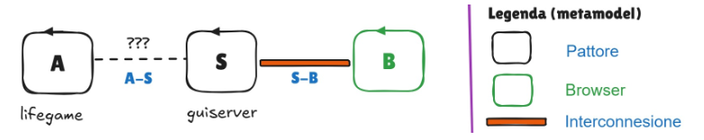

GIT repo: https://github.com/desypellegrini/IngegneriaSistemiSoftware2026.git
GIT repo: https://github.com/desypellegrini/IngegneriaSistemiSoftware2026.git

msg(display, dispatch, lifectrl, lifeSidecar, GRIDSTATE, N)msg(cellchanged, reply, lifectrl, lifeSidecar, cell(X,Y,done), N)msg(doneclear, reply, lifectrl, lifeSidecar, GRIDSTATE, N)msg(changecell, request, GuiServer, lifectrl, cell(X,Y), N)msg(cmdclear, request, GuiServer, lifectrl, clear, N)msg(cmd, dispatch, GuiServer, lifectrl, CMD, N)msg(changecell, request, caller1, GuiServer, cell(X,Y), N)